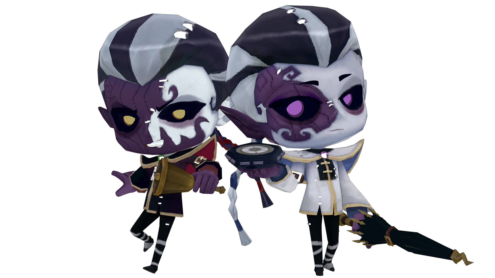

- 우산의 영혼
- 리퍼
- 이타콰
우산의 영혼 설명

<특성>
제행무상이라는 이동기로 맵을 빠르게 이동하며 운영하는 제5인격의 감시자 캐릭터. 특이하게도 흰색의 사필안과 검은색의 범무구라는 두 명의 캐릭터가 우산의 영혼이라는 한 감시자 캐릭터 안에 존재한다.
게임 도중에 누름단추를 눌러 이를 바꿀 수 있고, 버튼을 길게 누르면 바꿈과 동시에 멀리 있는 장소로 순간이동이 가능하다.
캐릭터가 사필안이냐 범무구냐에 따라 기본적인 이동속도, 평타 사정거리, 평타 후 딜레이에 차이가 있으며, 사필안일때는 섭혼, 범무구일때는 탕백 스킬을 사용이 가능하다.
섭혼을 이용해 빠른 속도로 추격 및 생존자에게 환각에 걸리게 만들 수 있고, 탕백으로 생존자를 쓰러트리고 교정을 뜨게 하고 만약 틀릴 시 조작을 반전시킨다.